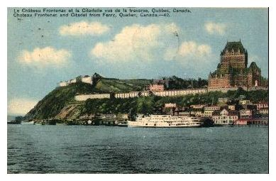
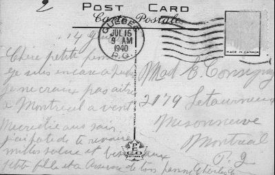

14 juillet 1940 Mad E. Consigny
Chère petite femme je suis encore à Québec 2179 Letourneux
Je ne croix pas aitre a Montreal avent Maisonneuve
Mercredi aux soir. J’ai hate de te revoire Montreal
Milles salue et besée aux petite fille et a P.Q.
Arserne de ton homme Charles C
July 14, 1940 Madame É. Consigny
Dear little wife, I am still in Quebec City. 2179 Létourneux
I don't think I'll be in Montreal before Wednesday Maisonneuve
evening. I can't wait to see you again, a thousand greetings and Montréal
Kisses to the little girls and to Arsène, P.Q.
from your husband, Charles C.